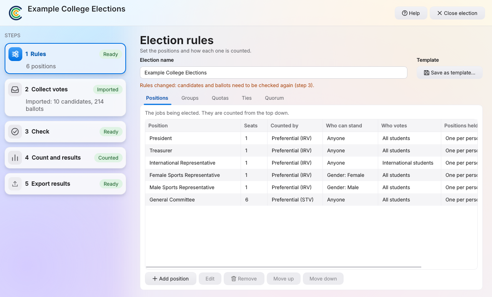
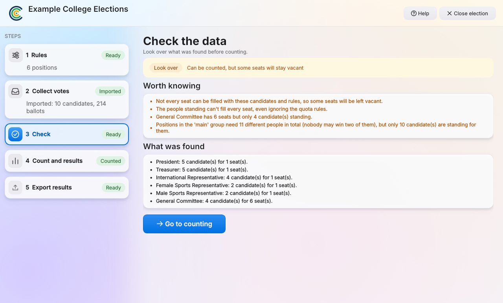
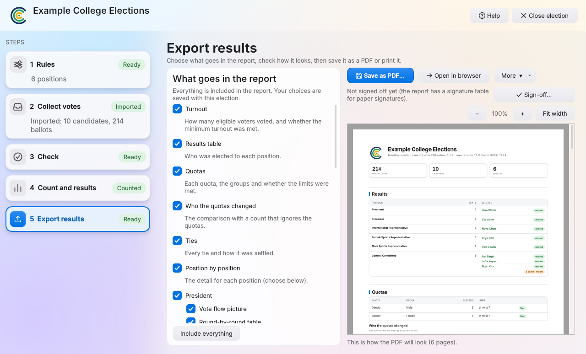
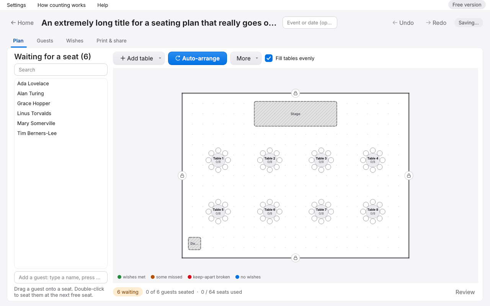

Count any election.
Every round, every ballot, and a record anyone can check.
COLection counts preferential and multi-seat elections, runs the vote on phones and voting stations, and keeps a record so anyone can check how the result came about. It runs on your own computer, and needs no internet while people vote.
Five steps. Same order every time.
Each election lives in its own folder with its own password. Each step tells you when it is ready.
Rules
Say who is being elected and how: single roles, committees, groups with limits, tie rules. Start from a template or build your own.
Collect votes
Import answers from Google Forms, or run the vote in person on phones and voting stations.
Check
Before anything is counted, the program checks that the rules and the people standing fit together, and tells you plainly if they do not.
Count and results
Count, settle any ties, then read the winners, the round-by-round tallies and the vote flow.
Export results
Choose what goes in the printed report, watch the PDF update as you tick things, then save it, print it or sign it off.





Vote in the room. On phones, or at a station.
One computer is the host. Voters join from a QR code on their phone, or sit at a voting station that goes full screen and locks until a password is entered. A person at the desk checks who is who and sends each voter to a free station.

- Two ways to rank
- Voters can number their choices, or drag names into order. Lines show the fewest and most preferences that count, and a red line marks where their list ends.
- Names stay off ballots
- A ballot carries no name and no time, and new ballots are placed at a random position, so nobody can work out whose is whose.
- Help without a queue
- A voter can tap I need help, and the desk sees which station asked.
- If the host fails
- Stations keep finished ballots, and a second computer can take over from a backup folder so no vote is lost.
Results that can be checked, not just trusted.
Choose what goes in the report and watch the PDF update as you tick things. Zoom in and out, make the text bigger or smaller, then save it or print it.
Seating plans, too.
Draw your room, add tables, and let COLection seat everyone. Tell it who must sit together and who should be kept apart, and it finds an arrangement that keeps as many wishes as it can. Then print the floor plan, table lists, place cards and a find-your-seat sheet.

- Wishes you can see
- Green guests got their wishes. Orange ones missed some, and lines show exactly who they wanted beside them.
- Suggest a swap
- Ask for the swaps that would help the most, and apply them one at a time.
- Late changes
- Someone cancels or brings a plus-one? Update the plan without starting again, and compare against an earlier snapshot.
- Ready to print
- Floor plan, lists with meal choices, place cards and lookup sheets, with your own logo and paper size.
Start from a template. Keep your own.
The library has ready-made setups for university unions, residential colleges, schools, clubs, community groups, awards nights and yes or no motions. Type a few words to find one, such as "uni", "school" or "club".
Built an election you will run again next year? Save its rules as your own template, and send the file to another group so they can use it too. Only the rules are saved, never candidates, voters or votes.
Templates are starting points. Check them against your own constitution before you rely on them.

Download COLection.
Version 0.2.0. It is a zip file: unzip it, and follow the steps beside this. A one-click Windows installer is planned.
Download the zip Need a hand? Read the help
If the program is not signed, Windows may show a warning the first time. That is expected for new software.
- Install Python 3.12 or newer From python.org. On the first screen of the installer, tick "Add python.exe to PATH".
- Unzip the folder Anywhere you like, for example your Documents folder.
-
Install the parts it needs, once
Open the folder, type
cmdin the address bar, press Enter, then runpy -m pip install -r requirements.txt. -
Start it
In the same window, run
py main.py.